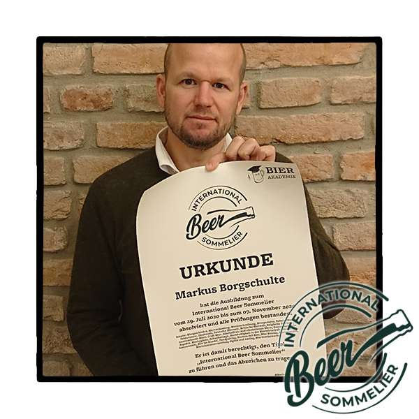

Seit 2009 widme ich mich der Kunst des Brauens. Gelernt bei einer Braumeisterin der Augustiner Brauerei in München, hat mich die Faszination für Charakterbiere nie wieder losgelassen.
Für mich ist Brauen wie Kochen auf Sterne-Niveau: Es geht darum, kreative Aromaideen präzise umzusetzen. Dies und die Vielfalt von Bieren und dessen Geschichten möchte ich gern weiter geben. Dabei weiß ich genau, wann beim Brauen Gelassenheit zählt – und wann absolute Exzellenz bei Hygiene und Rasttemperaturen entscheidend ist.
Heute teile ich dieses Wissen in Braukursen, Verkostungen und Brauereiführungen in München und Lippstadt.
"Nochmals vielen Dank für den super interessanten Kurs in lockerer Atmosphäre. [...] Wir sind auf jeden Fall angefixt und kommen definitiv nochmal zu einem Kurs von Dir."
— Florian, nach einem Braukurs